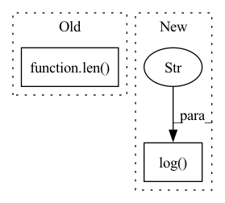

Pattern ID :40455
Before Change
print(len(labeled_heatmaps))
unlabeled_images = batch["unlabeled"]
print(type(unlabeled_images))
print(len( unlabeled_images) )
// push labeled images
pred_heatmaps_labeled = self.forward(labeled_images)
// push unlabeled imagesAfter Change
"total_loss", loss, on_step=True, on_epoch=True, prog_bar=True, logger=True
)
self.log(
"heatmap_loss_labeled" ,
heatmap_loss_labeled,
on_step=True,
on_epoch=True,
prog_bar=True,
logger=True,
)
self.log(
"pca_loss_labeled",
pca_view_loss_labeled,In pattern: SUPERPATTERN
Frequency: 4
Non-data size: 2
Instances Fragment ID: 114656791
Project Name: danbider/lightning-pose
Commit Name: 123af64174d3444a04e0af6ca48fd09ea0b513b4
Time: 2021-09-10
Author:
File Name: pose_est_nets/models/heatmap_tracker.py
M Class Name: Semi_Supervised_DLC
N Class Name: Semi_Supervised_DLC
M Method Name: training_step(3)
N Method Name: training_step(3)
M Parent Class: DLC
N Parent Class: DLC
M File Name: pose_est_nets/models/heatmap_tracker.py
N File Name: pose_est_nets/models/heatmap_tracker.py
M Start Line: 293
M End Line: 310
N Start Line: 308
N End Line: 327
Before Change
// Calculate SMAPE
forecasts = torch.exp(y_pred_mu[:, -self.forecast_length:]) - 1
targets = torch.exp(batch[:, -self.forecast_length:]) - 1
smape = self.get_smape(forecasts, targets) * len( batch)
return {"val_smape": smape, "batch_size": len(batch)}
def validation_epoch_end(self, outputs):After Change
smape = self.get_smape(forecasts, targets)
// Pytorch Lightning correctly computes the mean SMAPE, weighted by batch size
self.log("val_smape" , smape)
// def test_step(self, batch, batch_idx):
// x, y = batch
// logits = self(x) Fragment ID: 114656790
Project Name: alasdairtran/fourierflow
Commit Name: db1bc5b2b1b1e857413d022233621fd4d89a3909
Time: 2021-03-02
Author: alasdair.tran@gmail.com
File Name: scripts/train_nbeats_nodep.py
M Class Name: TimeSeriesODE
N Class Name: TimeSeriesODE
M Method Name: validation_step(3)
N Method Name: validation_step(3)
M Parent Class: pl.LightningModule
N Parent Class: pl.LightningModule
M File Name: scripts/train_nbeats_nodep.py
N File Name: scripts/train_nbeats_nodep.py
M Start Line: 359
M End Line: 363
N Start Line: 359
N End Line: 364
Before Change
// smape = torch.nan_to_num(smape, nan=200, posinf=200, neginf=200)
smape = smape.sum()
return {"val_smape": smape, "batch_size": len( batch) }
def validation_epoch_end(self, outputs):
val_smape_mean = 0After Change
// smape = torch.nan_to_num(smape, nan=200, posinf=200, neginf=200)
smape = smape.mean()
// Pytorch Lightning correctly computes the mean SMAPE, weighted by batch size
self.log("val_smape" , smape)
// def test_step(self, batch, batch_idx):
// x, y = batch
// logits = self(x) Fragment ID: 114656793
Project Name: alasdairtran/fourierflow
Commit Name: db1bc5b2b1b1e857413d022233621fd4d89a3909
Time: 2021-03-02
Author: alasdair.tran@gmail.com
File Name: scripts/train_nbeats_ode.py
M Class Name: TimeSeriesODE
N Class Name: TimeSeriesODE
M Method Name: validation_step(3)
N Method Name: validation_step(3)
M Parent Class: pl.LightningModule
N Parent Class: pl.LightningModule
M File Name: scripts/train_nbeats_ode.py
N File Name: scripts/train_nbeats_ode.py
M Start Line: 138
M End Line: 140
N Start Line: 138
N End Line: 140
Before Change
batch_idx (int): Integer displaying index of this batch
x, y = self.prepare_batch(batch)
batches_seen = batch_idx + self.current_epoch * len( self.train_dataloader())
pred = self(x, y, batches_seen)
if self.scaler is not None:
y = self.scaler.inverse_transform(y)After Change
batch_idx (int): Integer displaying index of this batch
train_loss = self._step(batch, batch_idx, dataset="train")
self.log("train_loss" ,train_loss)
return train_loss
def validation_step(self, batch, batch_idx):
Validates model for one step. Fragment ID: 114656792
Project Name: rose-stl-lab/torchts
Commit Name: 231acd6890b0f53af53e686860f916a7ee959601
Time: 2021-05-12
Author: akashshah59@gmail.com
File Name: torchts/nn/model.py
M Class Name: TimeSeriesModel
N Class Name: TimeSeriesModel
M Method Name: training_step(3)
N Method Name: training_step(3)
M Parent Class: LightningModule
N Parent Class: LightningModule
M File Name: torchts/nn/model.py
N File Name: torchts/nn/model.py
M Start Line: 53
M End Line: 62
N Start Line: 80
N End Line: 82